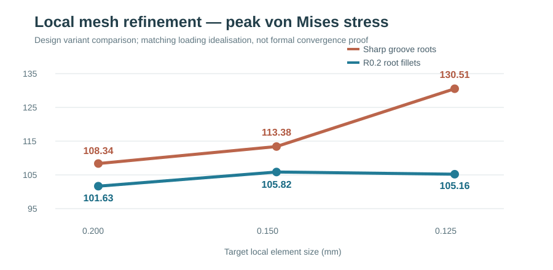
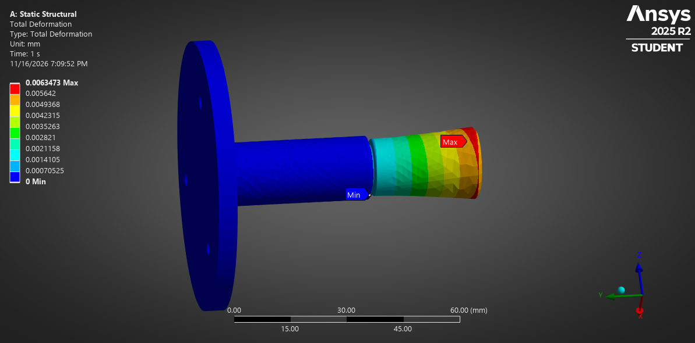

Can a small groove-root fillet improve the carrier's local stress response?
The project connects a SOLIDWORKS planetary gearbox assembly presentation to a focused ANSYS Mechanical assessment of the carrier and output shaft. A circumferential groove near the shaft transition was identified as the critical stress-concentration region.
The first STEP variant had approximately R0.5 external edge rounds but sharp groove-root corners. The modified geometry introduced R0.2 mm internal root fillets while retaining the major shaft features. The two versions were examined under equivalent simplified analysis assumptions.
Assembly and exploded-view presentation
The author-supplied approximately three-second SOLIDWORKS AVI records a digital exploded sequence showing the housing, geared components, carrier/output subassembly and mounting elements. It documents assembly presentation, not the complete kinematics or tooth-contact performance. A browser-compatible MP4 and a selected original exploded-assembly frame are embedded below. The author also supplied two original screenshots of the fully assembled model; the corresponding asset paths are documented below.
The available carrier STEP shows a round carrier flange with three planet-pin holes, an output shaft and a longitudinal slot/keyway-like feature. Recorded model dimensions are approximate: thick shaft Ø17 mm, end shaft Ø15 mm, groove-root Ø12 mm and a narrow groove bottom approximately 1 mm long. These measurements are not toleranced manufacturing drawings.
assets/projects/ paths before they appear on the live site. The images document external CAD assembly only; internal gear meshing and performance are not established by these screenshots.
Material, support, loads and simplifying assumptions
Solver: ANSYS Mechanical 2025 R2 Student, Static Structural. Material: predefined Structural Steel with E = 200 GPa, Poisson's ratio = 0.30, density = 7850 kg/m³ and yield strength = 250 MPa. This generic material definition is a modelling assumption, not a verified material specification.
A Cylindrical Support idealized the selected larger-shaft cylindrical surface as constrained. A +8,180 N·mm applied moment acted about global Y. Three distributed Bearing Load objects represented simplified planet-pin transfer:
| Planet | Fx [N] | Fy [N] | Fz [N] |
|---|---|---|---|
| A | -60.591 | 0 | -104.948 |
| B | -60.591 | 0 | +104.948 |
| C | +121.185 | 0 | 0 |
The entered force vectors sum to approximately +0.003 N along X. The effective distributed loads and their moments can differ slightly under numerical discretization. Idealized support stiffness, real shaft/bearing contact, gear tooth contact, fatigue loading, friction, tolerances, manufacturing residual stress and heat treatment were not modelled.
Sharp internal corners versus R0.2 fillets
The initial mesh study showed increasing peak stress at the narrow shaft groove as refinement progressed. Inspection of the geometry motivated adding two approximately 0.2 mm internal fillets at the groove root. This is a digital refinement study. A real retaining-ring groove, if present, would also require supplier and relevant standard checks before the revision could be approved.
Reported peak; stress rose with mesh refinement.
Reported before bore-B local mesh adjustment.
Local refinement and numerical sensitivity
Engineering rationale: A mathematically sharp re-entrant corner can produce a mesh-sensitive local stress peak in linear elasticity. Introducing a finite groove-root radius regularizes the idealized corner, but a stable peak in a small number of local mesh settings is not equivalent to global discretization convergence. The critical region must be assessed against actual groove geometry, manufacturing tolerances and fatigue loading.
Quadratic Tet10 mesh used targeted edge and fillet-face sizing at the groove. The revised geometry was run at nominal local target sizes of 0.20, 0.15 and 0.125 mm. A separate 0.5 mm local sizing was subsequently applied near the Planet B pin bore to study distributed load sensitivity. These are local sizes, not an all-body element size claim.

| Mesh metric | Recorded value, final mesh |
|---|---|
| Nodes / elements | 91,834 / 54,860 |
| Element formulation displayed | Tet10 |
| Element Quality, min / average / max | 0.096109 / 0.69311 / 0.99993 |
| Reported peak stress, final bore-refined mesh | 105.40 MPa |
The revised 0.15-to-0.125 mm local groove refinement changed peak stress by -0.62%; the additional bore mesh change shifted the value by +0.23%. This is a positive preliminary sensitivity check rather than complete mesh independence. The lowest-quality elements still need location-based review.
Stress, displacement and nominal yield margin

Interpretation: The reported nominal stress-to-yield screening ratio is 250/105.40 = 2.37 for the generic Structural Steel model. It is not a qualified factor of safety because cyclic loads, contact, real support compliance, material grade, notch fatigue and load derivation were not validated.
| Metric | Recorded result |
|---|---|
| Peak equivalent (von Mises) stress | 105.40 MPa, groove/shoulder region |
| Peak total deformation | 0.0063473 mm (6.3473 µm), output end |
| Nominal elastic yield ratio | 2.37 = 250 / 105.40; screening calculation only |
| Combined support force reaction | 0.68293 N |
| Combined support reaction moment, global Y | -8187.2 N·mm |
Isolating the three planet-pin loads
The reaction probes were checked against isolated single-bearing load cases with other applied loads temporarily suppressed. Planet A reacted at 121.18 N and Planet C at 121.19 N, matching their entered force magnitudes. Planet B initially reacted at 119.22 N for a nominal 121.18 N load; local bore refinement changed that reaction to 121.87 N. In the combined load case the support reaction magnitude fell from 1.9637 to 0.68293 N.
This pattern shows that the discretized Bearing Load transfer at Planet B affects the integrated force result. A solver reaction alone does not prove a force-balance violation. A complete equilibrium audit needs the integrated applied nodal forces and all force couples about a common point.
Useful design evidence, not manufacturing approval
- Re-run both geometry variants with matched mesh methodology and more refinement levels.
- Inspect low-quality elements near the groove and quantify stress averaging sensitivity.
- Replace idealized support constraints with validated bearing/shaft interface stiffness.
- Derive planet-pin forces from documented torque, gear geometry, transmission ratio and load sharing, including cyclic and shock loads.
- Evaluate pin-hole contact, fatigue life, notch sensitivity, material grade, heat treatment, tolerances and groove standard before manufacturing.
- Test an assembled prototype before claiming physical performance or release readiness.
Project status: completed preliminary numerical case study, November 2026. The PDF report, full screenshots and SOLIDWORKS motion clip are supplied as a separate portfolio media package.